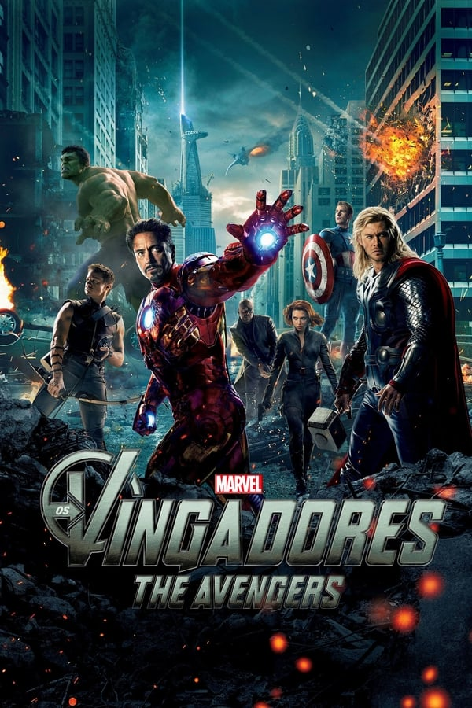
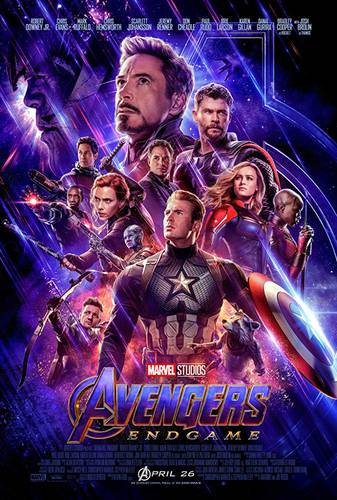

10. Os Vingadores (2012)
Arrecadação total: US$ 1,518 bilhão
Arrecadação nos EUA: US$ 623,35 milhões (41%)
Arrecadação internacional: US$ 895,45 milhões (59%)
Arrecadação no Brasil: US$ 63,9 milhões
Arrecadação na China: US$ 86,3 milhões
Custo de produção: US$ 220 milhões
Mais sobre o filme9. O Rei Leão

Arrecadação total: US$ 1,662 bilhão
Arrecadação nos EUA: US$ 543,63 milhões (32,8%)
Arrecadação internacional: US$ 1,119 bilhão (67,2%)
Arrecadação no Brasil: US$ 69,48 milhões
Arrecadação na China: US$ 120,44 milhões
Custo de produção: US$ 260 milhões
Mais sobre o filme8. JURASSIC WORLD: O MUNDO DOS DINOSSAUROS (2015)

Arrecadação total: US$ 1,67 bilhão
Arrecadação nos EUA: US$ 652,27 milhões (39%)
Arrecadação internacional: US$ 1,018 bilhão (61%)
Arrecadação no Brasil: US$ 29 milhões
Arrecadação na China: US$ 228,74 milhões
Custo de produção: US$ 150 milhões
Mais sobre o filme7. HOMEM-ARANHA: SEM VOLTA PARA CASA (2021)

Arrecadação total: US$ 1,832 bilhão
Arrecadação nos EUA: US$ 772,17 milhões (42,2%)
Arrecadação internacional: US$ 1,060 bilhão (57,8%)
Arrecadação no Brasil: US$ 55,4 milhões
Arrecadação na China: Não lançado no país
Custo de produção: US$ 200 milhões
Mais sobre o filme6. VINGADORES: GUERRA INFINITA (2018)

Arrecadação total: US$ 2,048 bilhões
Arrecadação nos EUA: US$ 678,81 milhões (33.2%)
Arrecadação internacional: US$ 1,36 bilhão (66.8%)
Arrecadação no Brasil: US$ 66,64 milhões
Arrecadação na China: US$ 359,54 milhões
Custo de produção: US$ 400 milhões (dividido com Vingadores: Ultimato)
Mais sobre o filme5. STAR WARS: O DESPERTAR DA FORÇA (2015)

Arrecadação total: US$ 2,069 bilhões
Arrecadação nos EUA: US$ 936,66 milhões (45,3%)
Arrecadação internacional: US$ 1,13 bilhão (54,7%)
Arrecadação no Brasil: US$ 27,81 milhões
Arrecadação na China: US$ 124,15 milhões
Custo de produção: US$ 245 milhões
Mais sobre o filme4. TITANIC (1997)

Arrecadação total: US$ 2,245 bilhões
Arrecadação nos EUA: US$ 672,44 milhões (30%)
Arrecadação internacional: US$ 1,573 bilhão (70%)
Arrecadação no Brasil: US$ 70,46 milhões
Arrecadação na China: US$ 145 milhões
Custo de produção: US$ 200 milhões
Mais sobre o filme3. AVATAR: O CAMINHO DA ÁGUA (2022)
Arrecadação total: US$ 2,247 bilhões
Arrecadação nos EUA: US$ 659 milhões
Arrecadação internacional: US$ 1,588 bilhão
Arrecadação no Brasil: US$ 45,32 milhões
Arrecadação na China: US$ 243,84 milhões
Custo de produção: US$ 250 milhões
Mais sobre o filme2. VINGADORES: ULTIMATO (2019)
Arrecadação total: US$ 2,797 bilhões
Arrecadação nos EUA: US$ 858,3 milhões (30,7%)
Arrecadação internacional: US$ 1,939 bilhão (69,3%)
Arrecadação no Brasil: US$ 85,66 milhões
Arrecadação na China: US$ 614,3 milhões
Custo de produção: US$ 400 milhões (dividido com Vingadores: Guerra Infinita)
Mais sobre o filme1. AVATAR (2009)
Arrecadação total: US$ 2,847 bilhões
Arrecadação nos EUA: US$ 760,5 milhões (26,7%)
Arrecadação internacional: US$ 2,086 bilhões (73,3%)
Arrecadação no Brasil: US$ 58,21 milhões
Arrecadação na China: US$ 204 milhões
Custo de produção: US$ 237 milhões
Mais sobre o filme